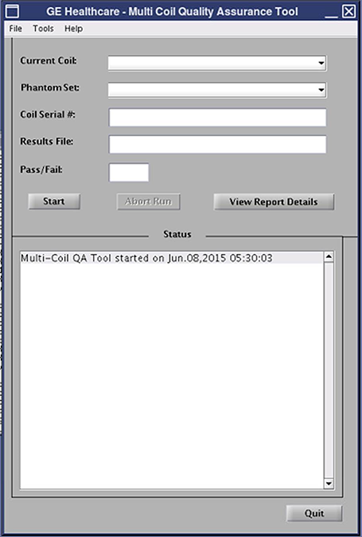
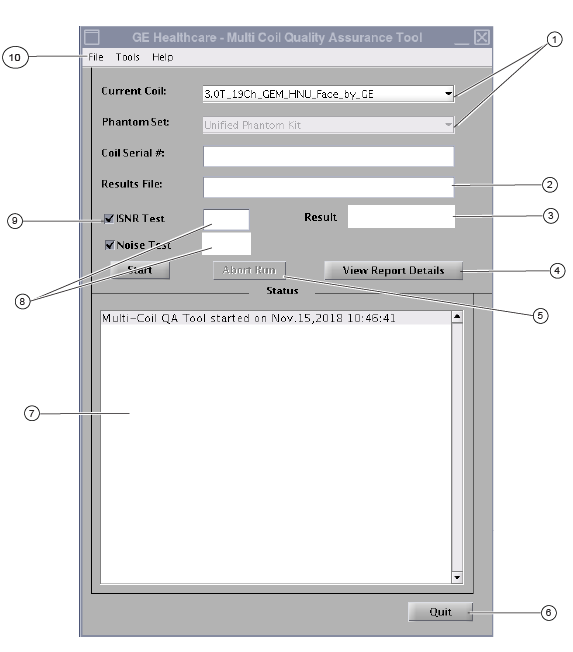

Doing the Multi-Coil Quality Assurance (MCQA) check
Prerequisites
The ISNR measurement technique used is not dependent on coil or phantom geometry problems. It analyzes intermediate images by integrating the signal, instead of placing regions of interest (ROIs) in particular regions of the image.
note: The Noise Test is coil-dependent and may not be applicable to all coils.
Figure 1. ISNR Formula

Procedure
- From the CSD, go to and click Click here to start this tool.The MCQA tool shows.note: All images contained in this document are a representation. Actual system images may vary.
Figure 2. MCQA tool

During startup, the MCQA tool tries to identify the coil connected to the system. The Current Coil field shows the current coil mode being tested.Figure 3. MCQA tool for SV25.1 software with noise test ()

1 Shows all connected coil/coil serial numbers 2 Results file would show the name of the .mcqa file generated during ISNR test or .noisetest file during noise test 3 Shows combined result when both tests are selected 4 Launches mcqa_viewer for ISNR test, noise_viewer for noise test, and both the viewers when both tests are selected 5 Aborts the current run, enabled only during scanning 6 Close all of the GUIs and exit 7 Status box shows step by step working of the tool and displays final analysis 8 Shows results for respective tests 9 Three workflow options: - ISNR Test: completes SNR test
- Noise Test: completes sub-clustering analysis
- ISNR Test and Noise Test: complete both analyses
10 Menu to select result file (ISNR or .noise test) for offline analysis - If successful, the tool automatically lists the connected coil in the Current Coil field.
- The names listed are the physical coil names and specific to the coil connector.
- If the coil is not recognized, a message displays indicating the coil must be configured.
- If the tool detects an incorrect coil selection during the download, an error message displays. You must manually select the correct coil from the Current Coil field.
- Enter the coil serial number in the Coil Serial # field.
- Position the coil and phantoms according to the QA test in the coil vendor manual. Refer to Coil Vendor Manuals.
- In the MCQA tool window, click Start to begin the test.A confirmation dialog box appears, asking you to continue with the selected phantom set.
- Click Yes.A warning dialog appears, asking you to verify the coil/phantom setup and position.
- Make sure the phantom and coil setup is correct and click Yes to continue.The status window of the MCQA tool continuously updates to give information about what the tool does. A time bar also shows the approximate total test time, elapsed time, and percent complete. After the test is completed, the test results file name shows in the Results File field, and the Pass/Fail field shows the overall test result.
- If the test fails, see Table 1 (Interpretation of test results) below for additional actions required based on the results of the test(s) you ran. In some cases, the Recommended Action column will direct you to the test result viewers
page.The MCQA tool may have a Fail test result for reasons including, but not limited to the following:
- Bad coil element(s)
- Incorrect phantom used for testing
- Incorrect positioning/placement of phantom
The MCQA tool may display Act Req in the Noise Test and/or Result windows if the variation among the noise groupings is such that it is necessary for the FE to perform additional inspection steps, as described in case no. 2 and 5, in order to understand the final test result status.
- Click Quit to exit the MCQA tool. Remove the coil and phantom from the system.
note: If the MCRv test has not been executed or returns missing or failed results, the MCQA tool will detect them and a message will show asking to continue. Click Yes to continue with the MCQA scan.